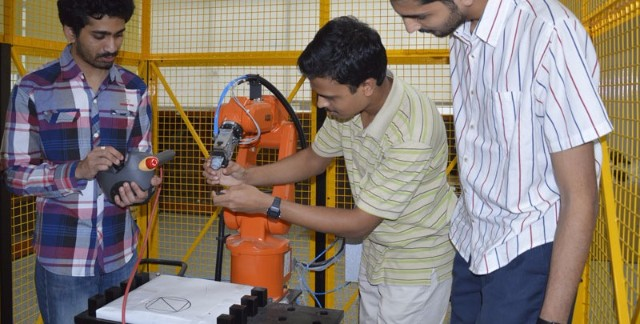

M.Tech in Electronic Systems Design
The M.Tech degree in Electronic Systems Design (ESD) is intended to help address the growth of the highly skilled manpower in Chip Design and Embedded System Design needed to support electronics system design and manufacturing (ESDM) in our country.
The course, in alignment with the national and state policies attempts to foster growth and entrepreneurship in ESDM as outlined by the Department of Electronics and Information Technology (DIETY) of the Government of India, and the Government of Karnataka, respectively.
The 2-year degree program allows students to specialize in two possible areas:
Embedded Systems
This stream integrates academic study and the realization of embedded systems with emphasis on building real-world embedded solutions thereby satisfying both the current and the future demands of industries internationally.
The sub-major includes a variety of subjects including the following:
- Internet of Things
- Real Time Operating Systems
- Device Drivers
- ARM Architecture
-
Inter-Device Communication
- Embedded Digital Signal Processing
- Mathematical Models of Computation
- Automotive Embedded Systems
- Machine Perception
System On Chip
This program covers Analog and Digital VLSI Circuit Design and Verification aspects which are applied on real time challenges faced by VLSI Industry.
This stream offers a variety of subjects including:
- Advanced Analog Design
- Design of VLSI Subsystem
- Mixed signal Design
- Circuit Simulation
- Deep Submicron Design Issues
- Functional Verification of SOC
- Testing And Design For Testability
Computational Sciences Lab
The Computational Sciences Lab at IIIT-B is interested broadly in the areas of Algorithms, Optimization, and Robotics.
Major focus areas include:
- Robust optimization under uncertainty, with applications to supply chains, real time search, banking, smart grid, transportation, gaming and allied areas
- Approximation algorims, machine learning, cryptography and linguistics, Visualization (scientific and information), high performance computing, computational geometry and topology
- Electronic Design Automation including Statistical timing analysis and Optimization for Digital circuits, Power Analysis and Optimization, Formal Verification, Semiconductor manufacturing, Statistical Optimization, Combinatorial Optimization, Design and Analysis of Alogrithms
HiDes Lab

The High Density Electronic Systems Lab at IIIT-B focuses on research and development in the area of high density and low dimensional electronics. The areas of research include 3D electronics, magnetic logic devices, interconnects, and antennas.
CEEMS Lab

The Center for Electronics and Embedded Systems (CEEMS) Lab's objective is to nurture talent by focusing on Embedded Computing, Wireless Communication and Computer Vision. CEEMS Lab collaborates with public and private organizations with the aim of bridging the gap between academic output and industry requirements, thus providing every learner an equal opportunity to become industry ready.
Multi Modal Perception Lab
The Multimodal Perception lab focuses on human-centered sensing and multimodal signal processing methods to observe, measure, and model human behavior. These methods are used in applications that facilitate behavioral training, and social media analysis; and enable human-robot interactions (HRI). The focus is mainly on vision and audio modalities. Probabilistic graphical models from the backbone of the underlying formalism.